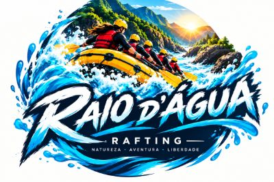
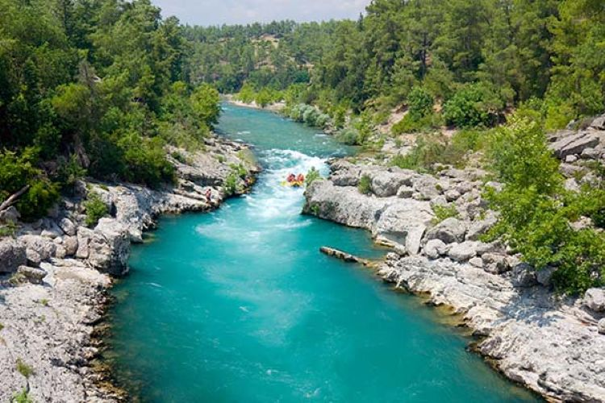

Nossa missão é proporcionar aventuras de rafting emocionantes e seguras, conectando as pessoas com a natureza e criando experiências que serão lembradas para sempre. Raio D'Água — A força da natureza, a emoção da aventura.


Nossa missão é proporcionar aventuras de rafting emocionantes e seguras, conectando as pessoas com a natureza e criando experiências que serão lembradas para sempre. Raio D'Água — A força da natureza, a emoção da aventura.
A Raio D'Água nasceu do desejo de unir aventura, natureza e diversão. A empresa foi criada por pessoas apaixonadas pelos rios e pelas montanhas, com o objetivo de proporcionar experiências inesquecíveis para quem gosta de explorar a natureza. Começamos com pequenos grupos de amigos que queriam conhecer os rios de uma maneira diferente. Com o tempo, essa paixão pelo rafting cresceu e se transformou em uma empresa que recebe pessoas de diferentes lugares para viver momentos de muita emoção e aventura. Hoje, a Raio D'Água busca oferecer experiências seguras e divertidas, sempre respeitando a natureza. Nosso objetivo é que cada pessoa termine a aventura com boas lembranças e vontade de voltar para viver uma nova experiência.